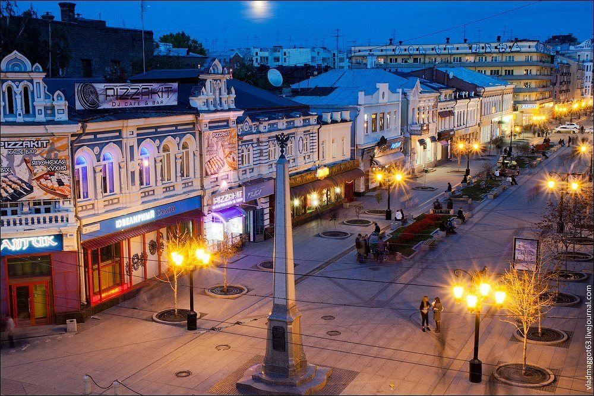

Город Самара
Самара (с 27 января 1935 года по 25 января 1991 года — Куйбышев) — город в Среднем Поволжье России, центр Поволжского экономического района и Самарской области.
История
Город основан в 1586 году как крепость при впадении в Волгу широкого рукава реки Самары.
Основное предназначение крепости заключалось в том, что она позволяла контролировать огромную территорию среднего течения Волги и устья Самары, вести планомерное завоевание земель, прикрытие Руси от набегов кочевников и обеспечение водного пути от Казани до Астрахани.

Достопримечательности
- Набережная Волги
- Ленинградская улица
- Музей "Самара космическая"
- Театр оперы и балета
- Музей модерна
- Смотровая площадка
TOP 3 кофеен города
- Muwa
- Skuratov
- Корж
